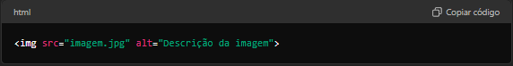

Este guia abordará as principais funcionalidades do HTML, utilizando exemplos práticos para ilustrar como usá-las.
Todo documento HTML deve seguir uma estrutura básica que inclui doctype, 'html', 'head' e 'body':

Os elementos de cabeçalho variam de <h1> a <h6>, onde <h1> é o mais importante e <h6> o menos importante.

O <p> é usado para parágrafos, e o <br> para quebras de linha.
Os links são criados usando o elemento ('<a>') . O atributo 'href' define o destino do link
O elemento (<img>) exibe imagens. O atributo 'src' define a fonte da imagen, e 'alt' fornece uma descrição alternativa
As listas ordenadas usam '<ol>' e as não ordenadas usam '<ul>', Os itens da lista são definidos com '<li>''

O elemento (<img>) exibe imagens. O atributo 'src' define a fonte da imagen, e 'alt' fornece uma descrição alternativa.
O elemento (<img>) exibe imagens. O atributo 'src' define a fonte da imagen, e 'alt' fornece uma descrição alternativa.

O <div> é usado para agrupar elementos, enquanto '<section>' e '<article>' são usados para seções semânticas.
Os comentários são usados para documentar o código e não são exibidos no navegador.

Conclusão
Estas são as principais funcionalidades do HTML, essenciais para qualquer desenvolvedor web. Compreendê-las permite criar páginas web básicas e estruturadas, com conteúdo bem organizado e acessível.